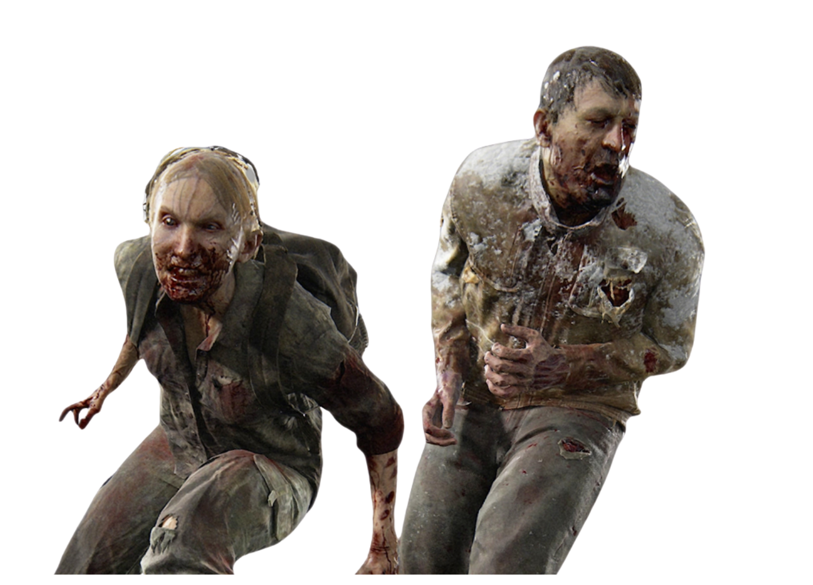
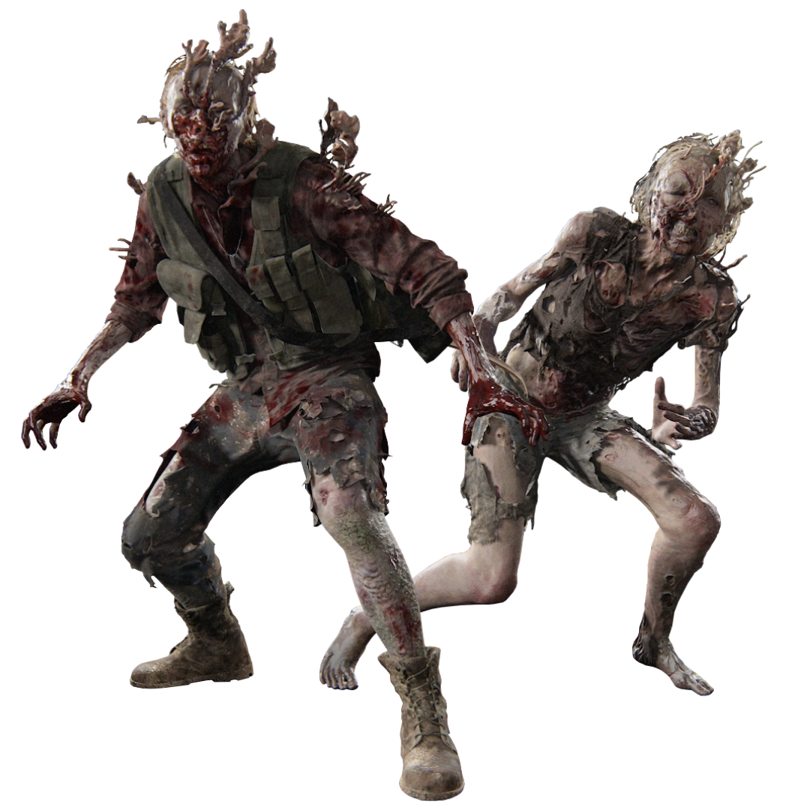
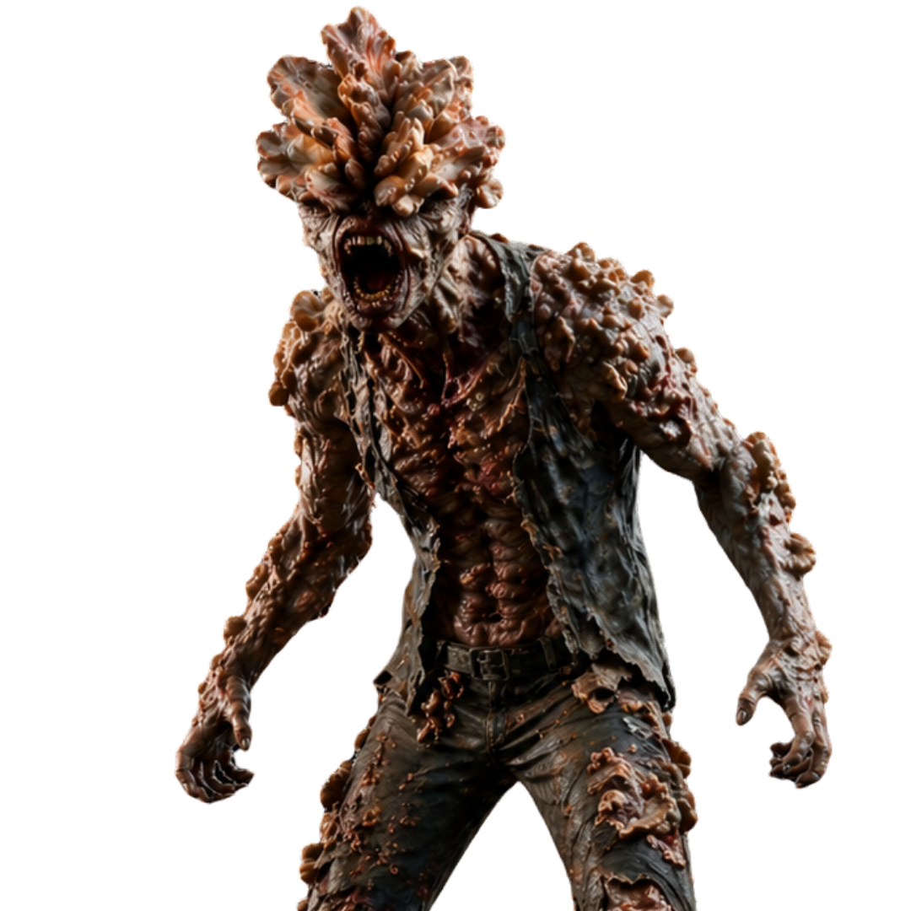
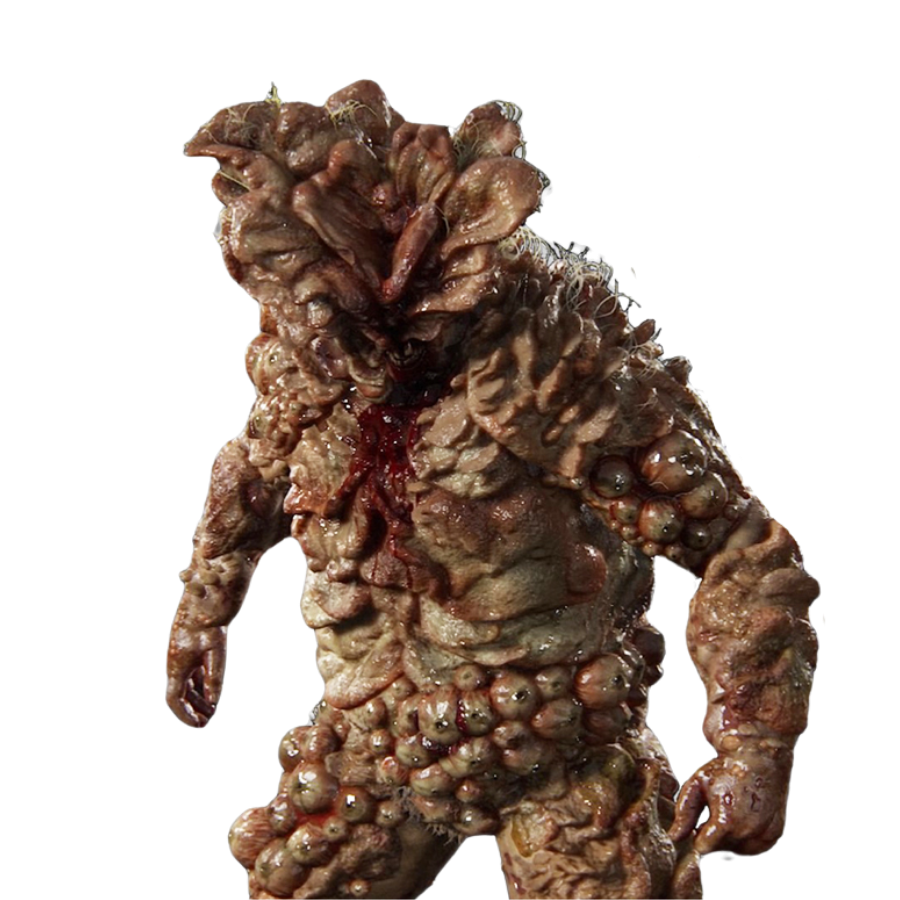
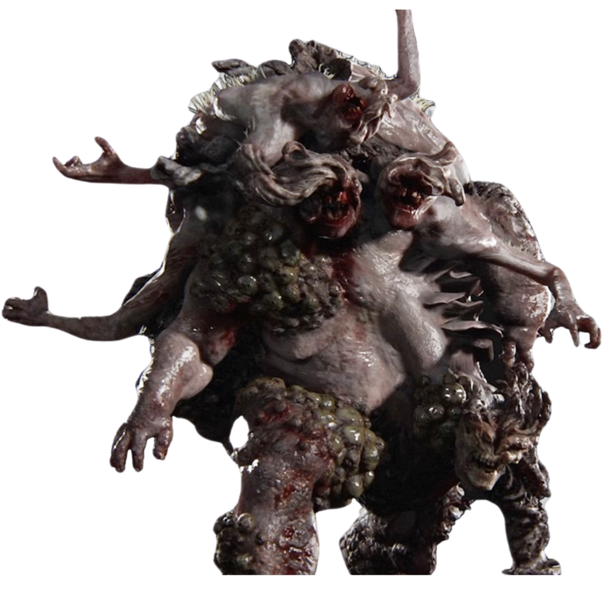

A evolução da infecção e as ameaças que dominam o mundo
estágio 1 da infecção
Perderam recentemente o controle para a infecção, mantendo ainda traços humanos visíveis. São rápidos, imprevisíveis e atacam por impulso.

Nível de perigo
baixoestágio 2 da infecção
Estão em uma fase intermediária, combinando características humanas e fúngicas. São furtivos e inteligentes.

Nível de perigo
baixoestágio 3 da infecção
Perderam a visão, mas desenvolveram uma audição extremamente aguçada. Se comunicam através de cliques emitidos por eco localização

Nível de perigo
baixoestágio 4 da infecção
Criaturas extremamente evoluídas, com o corpo coberto por placas densas de fungo que funcionam como armadura.

Nível de perigo
baixoestágio final da infecção
Uma massa grotesca formada por vários infectados fundidos. Representa um dos estágios mais raros e perigosos..

Nível de perigo
baixo